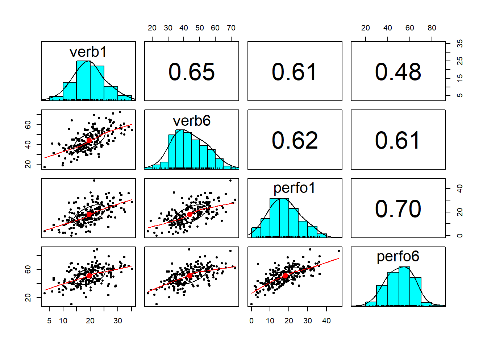
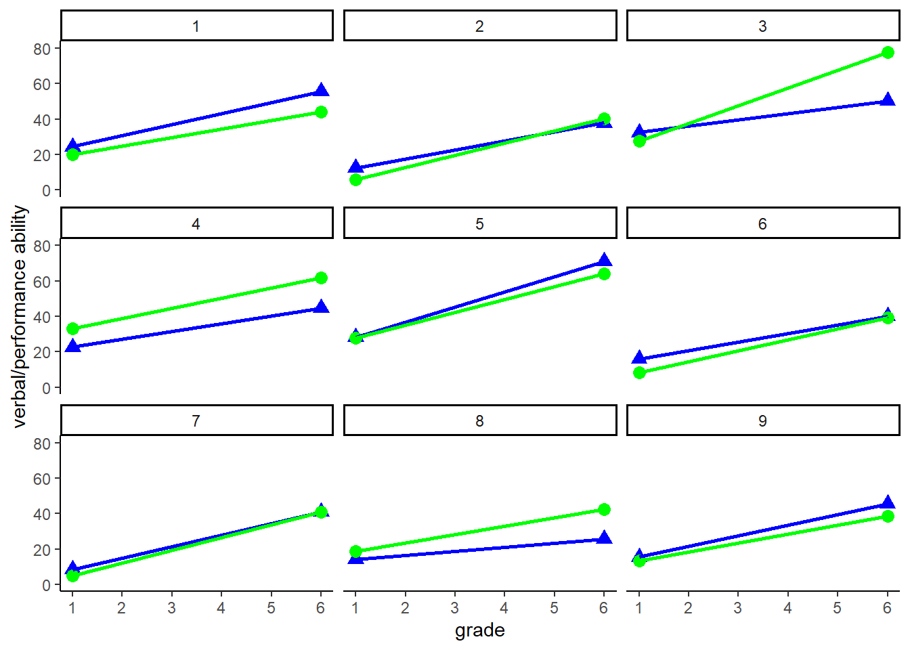

I used the data and follow the general tutorial of this website:
and these following referneces:
https://rdrr.io/github/RandiLGarcia/dyadr/man/apim.html
https://randilgarcia.github.io/week-dyad-workshop/Distinguishable.html#distingushable_dyads
However, I try to explain by myself and make changes.
Actor Partner Interdependence Model (APIM)
APIM model for distinguishable dyads. (Two intercept approach)
packages
library(ggplot2) ## Warning: package 'ggplot2' was built under R version 4.1.3library(nlme)
library(psych) ## Warning: package 'psych' was built under R version 4.1.3library(reshape) ## Warning: package 'reshape' was built under R version 4.1.3library(dplyr)## Warning: package 'dplyr' was built under R version 4.1.3data download
filepath <- "https://quantdev.ssri.psu.edu/sites/qdev/files/wisc3raw_gender.csv"
wisc4raw<-read.csv(file=url(filepath), header=T)
data<-wisc4raw[,c("id","verb1","verb6","perfo1","perfo6")]
print(head(data,10))## id verb1 verb6 perfo1 perfo6
## 1 1 24.42 55.64 19.84 44.19
## 2 2 12.44 37.81 5.90 40.38
## 3 3 32.43 50.18 27.64 77.72
## 4 4 22.69 44.72 33.16 61.66
## 5 5 28.23 70.95 27.64 64.22
## 6 6 16.06 39.94 8.45 39.08
## 7 7 8.50 40.83 4.85 41.03
## 8 8 14.11 25.68 18.72 42.36
## 9 9 15.52 45.52 13.37 38.53
## 10 10 20.07 48.65 15.26 48.39data reshaping
data_long <- reshape(data = data,
varying = c("verb1", "verb6",
"perfo1", "perfo6"),
timevar = c("grade"),
idvar = c("id"),
direction = "long", sep="")
print(head(data_long,10))## id grade verb perfo
## 1.1 1 1 24.42 19.84
## 2.1 2 1 12.44 5.90
## 3.1 3 1 32.43 27.64
## 4.1 4 1 22.69 33.16
## 5.1 5 1 28.23 27.64
## 6.1 6 1 16.06 8.45
## 7.1 7 1 8.50 4.85
## 8.1 8 1 14.11 18.72
## 9.1 9 1 15.52 13.37
## 10.1 10 1 20.07 15.26Actor effect
Partner effect
Basic stats
describe(data$verb1)## vars n mean sd median trimmed mad min max range skew kurtosis se
## X1 1 204 19.59 5.81 19.34 19.5 5.41 3.33 35.15 31.82 0.13 -0.05 0.41describe(data$verb6)## vars n mean sd median trimmed mad min max range skew kurtosis
## X1 1 204 43.75 10.67 42.55 43.46 11.3 17.35 72.59 55.24 0.24 -0.36
## se
## X1 0.75describe(data$perfo1)## vars n mean sd median trimmed mad min max range skew kurtosis se
## X1 1 204 17.98 8.35 17.66 17.69 8.3 0 46.58 46.58 0.35 -0.11 0.58describe(data$perfo6)## vars n mean sd median trimmed mad min max range skew kurtosis
## X1 1 204 50.93 12.48 51.76 51.07 13.27 10.26 89.01 78.75 -0.06 0.18
## se
## X1 0.87Correlation
cor(data[, 2:5])## verb1 verb6 perfo1 perfo6
## verb1 1.0000000 0.6541040 0.6101379 0.4779672
## verb6 0.6541040 1.0000000 0.6183155 0.6106694
## perfo1 0.6101379 0.6183155 1.0000000 0.6958321
## perfo6 0.4779672 0.6106694 0.6958321 1.0000000pairs.panels(data[, c("verb1", "verb6", "perfo1", "perfo6")]) Visualization
data_long %>%
subset(id <=9) %>%
ggplot( aes( x= grade, group=id), legend = FALSE) +
geom_point(aes(x=grade, y=verb), shape = 17, size= 3, color = "blue") +
geom_point(aes(x=grade, y=perfo), shape = 19, size= 3, color = "green") +
geom_line(aes(x=grade, y=verb), lty= 1, size=1, color = "blue") +
geom_line(aes(x=grade, y=perfo), lty= 1, size = 1, color="green") +
xlab("grade") +
ylab("verbal/performance ability") +
ylim(0,80) +
scale_x_continuous(breaks= seq(0,7, by = 1)) +
theme_classic () +
facet_wrap( ~id) ## Data prepare
data_melt <- reshape::melt(data=data,
id.vars=c("id","verb1","perfo1"),
na.rm=F)
print(head(data_melt,10))## id verb1 perfo1 variable value
## 1 1 24.42 19.84 verb6 55.64
## 2 2 12.44 5.90 verb6 37.81
## 3 3 32.43 27.64 verb6 50.18
## 4 4 22.69 33.16 verb6 44.72
## 5 5 28.23 27.64 verb6 70.95
## 6 6 16.06 8.45 verb6 39.94
## 7 7 8.50 4.85 verb6 40.83
## 8 8 14.11 18.72 verb6 25.68
## 9 9 15.52 13.37 verb6 45.52
## 10 10 20.07 15.26 verb6 48.65colnames(data_melt)[4:5]<-c("grade6_variable","grade6_score")
data_melt<-data_melt[order(data_melt$id, data_melt$grade6_variable),]
print(head(data_melt,10))## id verb1 perfo1 grade6_variable grade6_score
## 1 1 24.42 19.84 verb6 55.64
## 205 1 24.42 19.84 perfo6 44.19
## 2 2 12.44 5.90 verb6 37.81
## 206 2 12.44 5.90 perfo6 40.38
## 3 3 32.43 27.64 verb6 50.18
## 207 3 32.43 27.64 perfo6 77.72
## 4 4 22.69 33.16 verb6 44.72
## 208 4 22.69 33.16 perfo6 61.66
## 5 5 28.23 27.64 verb6 70.95
## 209 5 28.23 27.64 perfo6 64.22Creating dummy variable for further analysis
data_melt$verb_on <- ifelse(data_melt$grade6_variable == "verb6", 1, 0)
data_melt$perform_on <- ifelse(data_melt$grade6_variable == "perfo6", 1, 0)
print(head(data_melt,10))## id verb1 perfo1 grade6_variable grade6_score verb_on perform_on
## 1 1 24.42 19.84 verb6 55.64 1 0
## 205 1 24.42 19.84 perfo6 44.19 0 1
## 2 2 12.44 5.90 verb6 37.81 1 0
## 206 2 12.44 5.90 perfo6 40.38 0 1
## 3 3 32.43 27.64 verb6 50.18 1 0
## 207 3 32.43 27.64 perfo6 77.72 0 1
## 4 4 22.69 33.16 verb6 44.72 1 0
## 208 4 22.69 33.16 perfo6 61.66 0 1
## 5 5 28.23 27.64 verb6 70.95 1 0
## 209 5 28.23 27.64 perfo6 64.22 0 1The website’s explanation is not detailed enough for understand. Here is some steps for undertanding this model.
** note ** The equation from the website and my equation from my head has difference (# of residual)
So when “verb_on” is equal to 0: \[ Grade6outcome_{ij} = VerbOn_{ij}*(\beta_{v0} + \beta_{v1}(Verb1)_{ij}+\beta_{v2}(Perform1)+e_{vj}) + PerformOn_{ij}*(\beta_{p3}+\beta_{p4}(perform1)_{ij}+ \beta_{p5}(verb1)_{ij}+e_{vj})\]
VerbOn=Dummy __ variable (Verb=1, not=0)
PerformOn=Dummy varaible (Perform=1, not=0)
\(\beta_{p3}\) is Verbal’s intercept \(\beta_{p4}\) the actor effect on perform \(\beta_{p5}\) the partner effect on perform \(e_{pj}\) Perform’s residual in person J
\[ Grade6outcome_{ij} = VerbOn_{ij}*(\beta_{v0} + \beta_{v1}(Verb1)_{ij}+\beta_{v2}(Perform1)_{ij}+e_{vj}) \] \(\beta_{v0}\) is Verbal’s intercept \(\beta_{v1}\) the actor effect on verbal \(\beta_{v2}\) the partner effect on verbal \(e_{vj}\) verb’s residual in person J
apim_full <- gls(grade6_score ~ -1+ #no intercept
verb_on + #verbal intercept
verb_on:verb1 + #verbal actor
verb_on:perfo1 + #performance effect
perform_on + #performance intercept
perform_on:perfo1 + #performance actor
perform_on:verb1, #verbal partner
correlation = corSymm(form=~1|id),
weights = varIdent(form=~1|verb_on), #allow for different error terms (error varianace ) for the two variables/or two members. in this case, V and P
data = data_melt,
na.action = na.exclude)
# The reason why here use : rather than *
# "Using * will force R to add the main effects, while : will only give you that specific interaction you’re asking for."
# Source:
# https://randilgarcia.github.io/week-dyad-workshop/Distinguishable.html#distingushable_dyads
summary(apim_full)## Generalized least squares fit by REML
## Model: grade6_score ~ -1 + verb_on + verb_on:verb1 + verb_on:perfo1 + perform_on + perform_on:perfo1 + perform_on:verb1
## Data: data_melt
## AIC BIC logLik
## 2879.029 2914.997 -1430.514
##
## Correlation Structure: General
## Formula: ~1 | id
## Parameter estimate(s):
## Correlation:
## 1
## 2 0.312
## Variance function:
## Structure: Different standard deviations per stratum
## Formula: ~1 | verb_on
## Parameter estimates:
## 1 0
## 1.000000 1.188537
##
## Coefficients:
## Value Std.Error t-value p-value
## verb_on 19.869325 1.8634459 10.662679 0.0000
## perform_on 30.049124 2.2147736 13.567582 0.0000
## verb_on:verb1 0.809886 0.1150893 7.037017 0.0000
## verb_on:perfo1 0.446064 0.0800504 5.572292 0.0000
## perfo1:perform_on 0.962419 0.0951429 10.115507 0.0000
## verb1:perform_on 0.182846 0.1367879 1.336709 0.1821
##
## Correlation:
## verb_n prfrm_ vrb_n:v1 vrb_n:p1 prf1:_
## perform_on 0.312
## verb_on:verb1 -0.738 -0.230
## verb_on:perfo1 -0.034 -0.011 -0.610
## perfo1:perform_on -0.011 -0.034 -0.190 0.312
## verb1:perform_on -0.230 -0.738 0.312 -0.190 -0.610
##
## Standardized residuals:
## Min Q1 Med Q3 Max
## -2.55877996 -0.66034371 -0.02441614 0.62804539 3.69258907
##
## Residual standard error: 7.545255
## Degrees of freedom: 408 total; 402 residualintercept :
19.869325 : expected verbal score at grade 6 when grade 1 verb/perfo
scores are zero.
30.049124 : expected perforamce score at grade 6 when grade 1 verb/perfo
scores are zero.
verb_on:verb1 0.809886
1 point increase in verbal grade 1 is associated with 0.81 difference in
verbal 6
verb_on:perfo1 0.446064
every 1 point increase in perfo grade 1 is assoicated with 0.45 diff in
verbal 6
perfo1:perform_on 0.962419
1 point increase in performance grade 1 is associated with 0.96 diff in
perfo 6
verb1:perform_on 0.182846
non-sig.